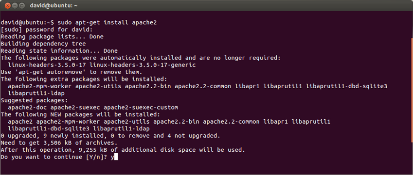
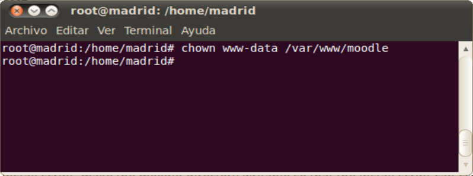

INSTALACION
Instalacion Apache
Prerrequisitos
Antes de empezar a realizar estos pasos, se debe tener un usuario regular configurado en su servidor, éste debe corresponder a una cuenta con privilegios de sudo, que no sea superusuario (root). Adicionalmente, necesitarás habilitar un cortafuegos básico que bloquee los puertos no esenciales. Puedes aprender cómo configurar una cuenta de usuario regular y cómo ajustar el cortafuegos para tu servidor, siguiendo nuestra guía inicial de configuración para Ubuntu 18.04.Cuando se tenga una cuenta disponible, ingresa con el usuario diferente a superusuario que mencionamos anteriormente y podrás empezar.
Paso 1
Instalar Apache Apache se encuentra disponible dentro de los repositorios de software predeterminados de Ubuntu, haciendo posible la instalación mediante las herramientas convencionales de administración de paquetes.Empezaremos por actualizar el índice de los paquetes locales. Esto, para garantizar que en él se refleje las cargas más recientes de las nuevas versiones de los paquetes.
sudo apt update
A continuación, instala el paquete apache2: sudo apt install apache2 
Después de confirmar la instalación, apt instalará Apache al igual que todas las dependencias requeridas. Después de que está instalado,debemos escribir localhost o 127.0.0.1 en la barra de direcciones de nuestro navegador para comprobar que el servidor Apache se está ejecutando correctamente en nuestro equipo.
Posterior a esto solo debemos ejecutar el siguiente comando para dar permisos
sudo chown www-data: www-data /var/www/html/ -R Instalacion PHP
Paso 2
PHP es el componente de nuestra configuración que procesará código para mostrar contenido dinámico. Puede ejecutar secuencias de comandos, conectarse a nuestras bases de datos MySQL para obtener información, y entregar el contenido procesado a nuestro servidor web para mostrarlo.
Una vez más podemos aprovechar el sistema apt para instalar nuestros componentes. Vamos a incluir algunos paquetes de ayuda, así, por lo que el código PHP se puede ejecutar en el servidor Apache y hablar con nuestra base de datos MySQL:
sudo apt-get install php libapache2-mod-php php-mcrypt php-mysql sudo apt-get install -y python-software-properties Ahora lo siguiente será agregar este repositorio para poder instalar la versión más actual de PHP. sudo add-apt-repository -y ppa:ondrej/php sudo apt install php7.1 php7.0-cli php7.1-common php7.1-mbstring php7.1-intl php7.1-xml php7.1-mysql php7.1-mcryptLa dirección que desea visitar será:
http://dirección_IP_del_servidor/info.phpLa página que verá debe ser algo como esto: